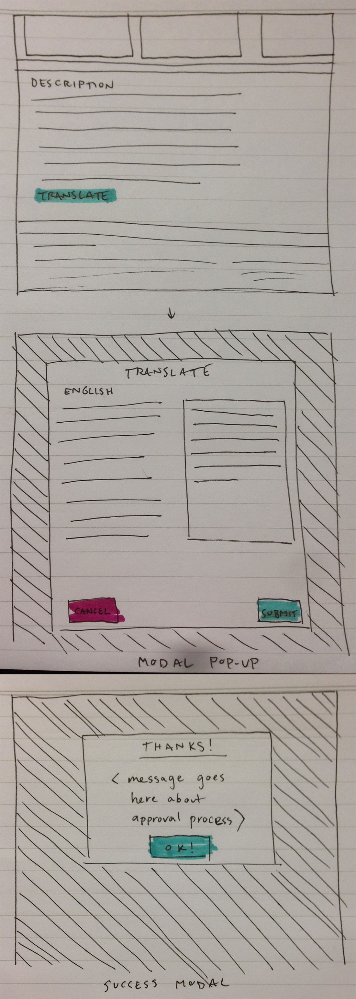

---
layout: MarketplaceUXSpec
multipage: false
---	

<div class="container">
	<h1>Concept &rarr; Localise app description</h1>

	<!-- Pagination. If you have more than one page, set the multipage variable in the Frontmatter to true. Editing the pagination code happens in /_includes/homePagination.html. -->
	{% if page.multipage %}
		{% include homePagination.html %}
	{% endif %}

	<div class="col-sm-12 col-md-12 col-lg-12">
	
	  <ol class="longText">
	    <li>A “Translate” link appears below the Description field in the App Details page</li>
	    <li>When selected, a modal pop-up appears with these elements:
	      <ol>
	        <li>The original string (in this case, it’s English)</li>
	        <li>A textbox that allows user to localise the string in a selected locale</li>
	        <li>Cancel and Submit</li>
	       </ol>
	     <li>When submitted, a success message is displayed</li>
	  </ol>
    
    

	</div>
	
		
